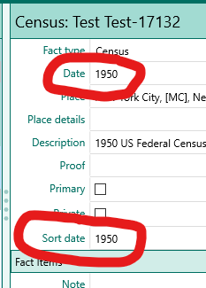
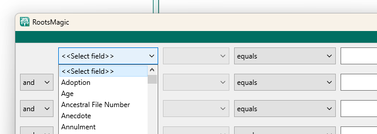

RootsMagic Tips and Tricks
Applies to RootsMagic v9 software
Published by RootsMagic, Inc. RootsMagic website
This list last updated: 2023-09-09
1- Thesaurus
Items sometimes are referred to by different names in different contexts
Here is a list of items that may be confusing.
Thesaurus
2- Sort date
Commonly misunderstood feature.

The top circled field is the "normal date", the bottom one is the Sort Date.
The Sort Date is used to sort:
- Facts in the fact list
- Persons (offspring) in lists of a family's children by birth sort date (??)
- Persons (spouses) in lists of a person's spouses (??) by marriage sort date (??)
Never displayed in reports.
Only used for sorting items in the RM display and in reports (??).
The sort date is, by default, set to the same value as the normal date (except for qualitative date modifiers)
The sort date may be set to any desired value.
3- Sorting multiple facts on the sane day
Dates in RM are are not TimeStamps and are limited to calendar dates. No clock time value is allowed.
When more than one event occurs on the same calendar day and the order of the events is known, use the dashed sort date feature.
For a clear explanation, see- RM v9 help: Date formats, last section: Sorting events on the same date
Quick example-
The normal date values for the events may all be the same, but the sort date for each event would modified by adding -1, -2 -3 etc
For example, if four events happened on May 1, 1950, the sort dates are all by default, the same as the normal date: 1 May 1950.
Change the sort dates to:
1 May 1950-1
1 May 1950-2
1 May 1950-3
1 May 1950-4
The corresponding facts will be sorted accordingly.
Note that the character entered by the user is the standard hyphen "-", but it is changed to an en-dash "–" when displayed. (Similar to how RM handles date ranges)
For info on dashes and hyphens, see Em Dash (—) vs. En Dash (–)
- Advanced Search primary field values
The Advanced Search feature in RM sets up a query using the user interface -

The first field, at first glance, appears to be a list of all the fact types used in the database, standard and user created.
However, there are a number of items in the list that aren't facts-
Non-fact type items in the data (all that are not a specific fact)
Given name(s)
Given (or Nickname)
Surname
Surname (Birth or Marr)
Prefix
Suffix
Nickname
Any Fact
Date edited
FamilySearch ID
Living flag
Number of children
Number of sets of parents
Number of siblings
Number of spouses
Record number
Sex
Source (family)
Source (general)
- Advanced Search options listing
Advanced Search options
- Adding media files after browser download
- Search the Source List primary items